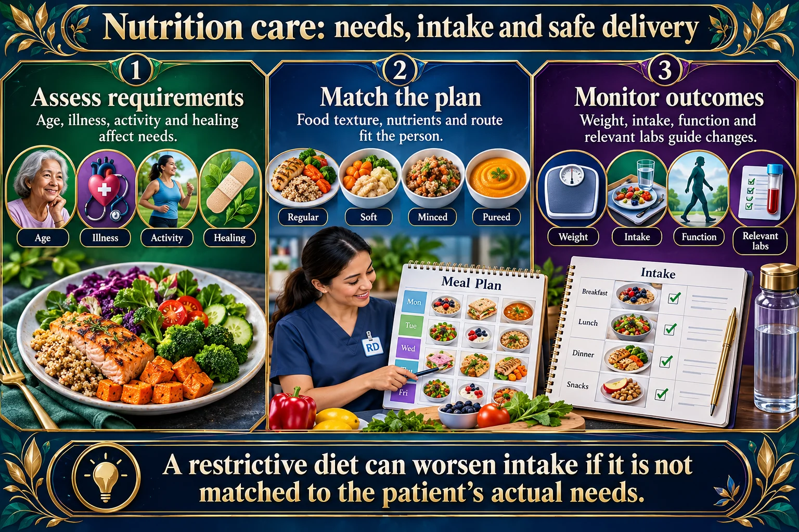

Nutrition I — the six nutrients, the assessment, and the feeding interventions that keep clients safe
A nutritional assessment matters because the needs are different for every client. You have to account for their religious and cultural needs, their illnesses, and their allergies — and then think about how the food is actually presented to someone lying in a hospital bed.
📄 Simple Nursing original — opens in Drive →
Six nutrient classes. Three of them give you calories; three of them make the machinery work.
TEACHING Half the plate vegetables & fruit, a quarter lean protein, a quarter grains — and make at least half of those grains whole grains.

A restrictive diet can worsen intake if it is not matched to the patient’s actual needs.
Assess requirements
Age, illness, activity and healing affect needs.
Match the plan
Food texture, nutrients and route fit the person.
Monitor outcomes
Weight, intake, function and relevant labs guide changes.
Diet types
A prescribed diet targets a particular need; restrictions should have a clear purpose.
Swallowing
Texture and liquid changes require assessment and instructions.
Collaboration
Include preferences, access, culture and dietitian input.
That is why fat is capped: it is the most calorie-dense thing on the plate.
Simple carbs = less fiber → FAST sugar spikes → high glycemic index. Complex carbs = most fiber → slow, steady sugar levels → low glycemic index.
| 🍞 SIMPLE carbohydrate | 🫘 COMPLEX carbohydrate |
|---|---|
| Less fiber | MOST fiber |
| FAST sugar-level spikes | Slow, steady sugar levels |
| → High glycemic index | → Low glycemic index (usually) |
| White bread · white pasta · white bagels · candy · juice | Beans · lentils · whole-grain bread · oats · potatoes |
| Spike then crash → hunger and another spike | Steadier energy, better satiety, better glycemic control |
⚠️ Careful: “complex” and “low GI” are not the same word. Potatoes are a complex carbohydrate with a fairly high glycemic index — the fiber, the processing and what else is on the plate all change the response.
Fat in the diet is what lets A, D, E & K be absorbed at all — a very low-fat diet can create a fat-soluble vitamin problem.
Nearly all absorption happens in the small intestine, across a lining folded into millions of finger-like villi. Sugars & amino acids go into the blood capillaries; most fats go into the lymphatic lacteal.
Every client's needs are different. Get the history before you get the tray.
Never let a client sit NPO shift after shift without escalating it — “still NPO” is not a nutrition plan.
Half of hospital nutrition is not the food — it is the position, the mouth, and the room.
Sit up in a chair if possible. If the client cannot get out of bed, use high Fowler's position and keep that position for 1 hour after eating.
Never feed a client who is lying flat, drowsy, or not fully awake.